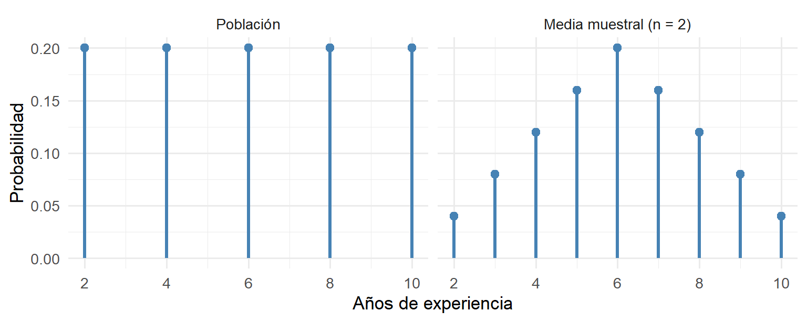
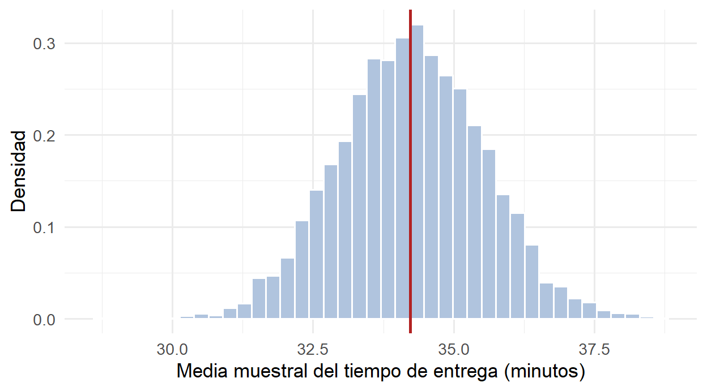
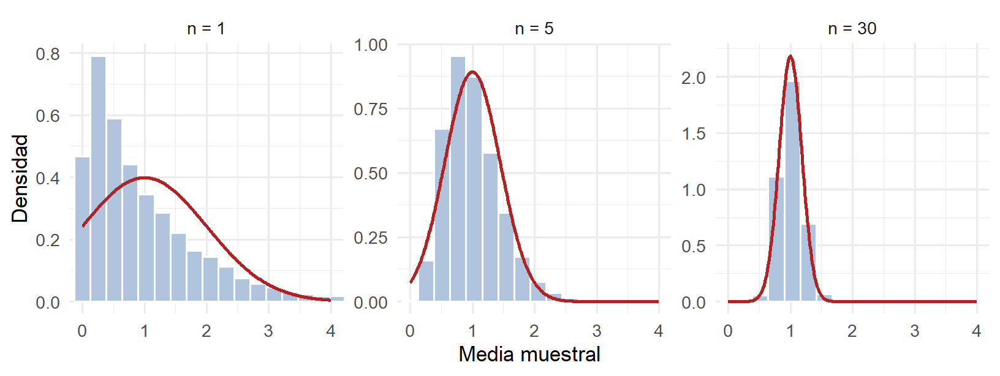
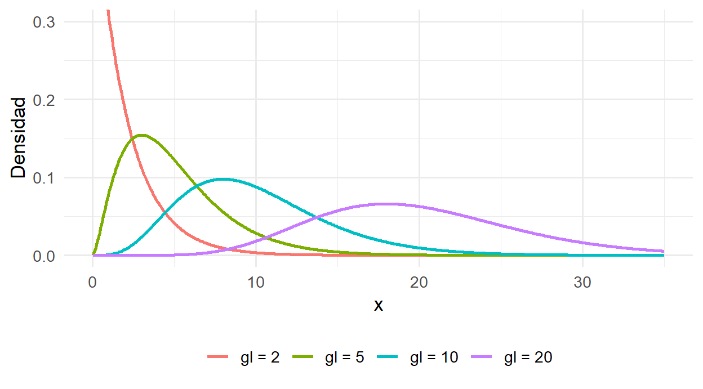
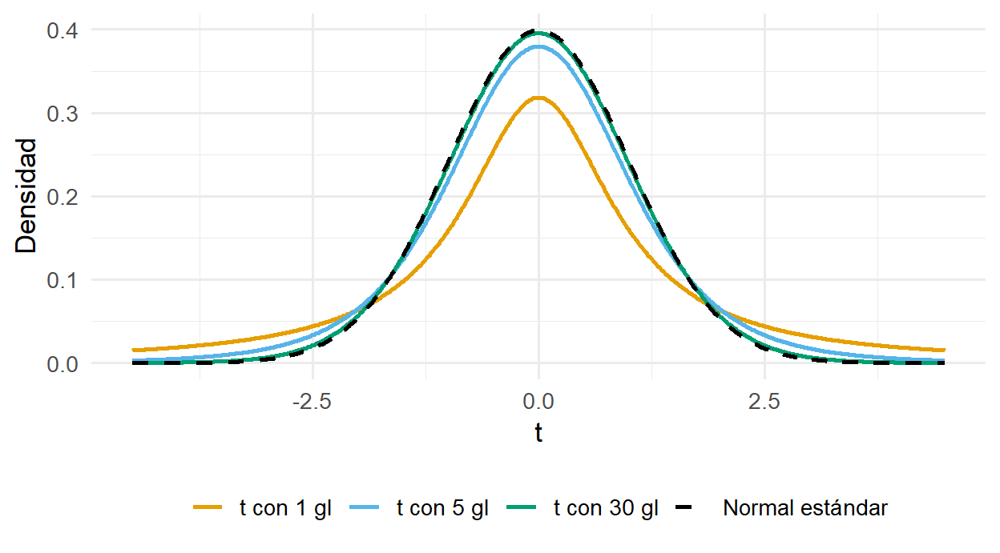
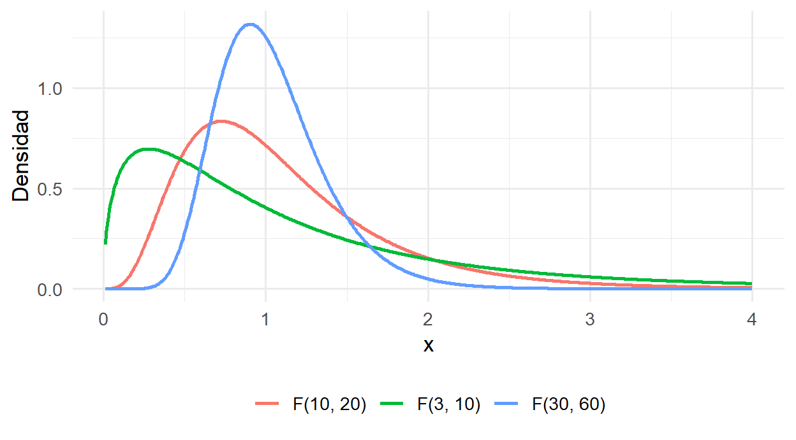

Al terminar este capítulo, usted estará en capacidad de:
distinguir entre muestreo probabilístico y no probabilístico, y describir las principales técnicas de muestreo;
definir el muestreo aleatorio simple y el concepto de muestra aleatoria, que se usarán en el resto del curso;
entender por qué un estadístico es una variable aleatoria y qué es su distribución muestral;
describir la distribución muestral de la media y de la proporción;
comprender y aplicar el teorema central del límite;
conocer las distribuciones chi-cuadrado, t de Student y F, y su papel en la inferencia;
usar R para seleccionar muestras y simular distribuciones muestrales.
En los capítulos 2 y 3 calculamos probabilidades suponiendo que conocíamos el modelo y sus parámetros: la proporción \(p\) de piezas defectuosas, la media \(\mu\) y la desviación estándar \(\sigma\) de una normal. En la práctica ocurre lo contrario: los parámetros de la población son desconocidos, y lo único que tenemos es una muestra. Este capítulo construye el puente entre las dos situaciones: estudia cómo se comportan los estadísticos calculados con muestras aleatorias, y es la base sobre la que se apoyan la estimación y las pruebas de hipótesis, que se estudiarán en el curso de Estadística II (Walpole et al., 2012, p. 233).
1 Población, muestra y muestreo
1.1 Un recordatorio
En el capítulo 1 definimos la población como el conjunto completo de unidades de interés, de tamaño \(N\), y la muestra como el subconjunto que efectivamente se observa, de tamaño \(n\). Vimos también que una medida calculada con toda la población es un parámetro, fijo pero generalmente desconocido, mientras que una calculada con la muestra es un estadístico, que se conoce pero cambia de una muestra a otra. Y advertimos que, para que una muestra permita sacar conclusiones confiables sobre la población, debe ser representativa. La pregunta ahora es: ¿cómo se elige una muestra para que lo sea?
Definición 1 (Muestreo) El muestreo es el procedimiento mediante el cual se selecciona una muestra de una población. Para llevarlo a cabo se necesita un marco muestral: un listado o mecanismo que identifica a todas las unidades de la población y del cual se extrae la muestra, como el listado de estudiantes matriculados, el directorio de empresas de una ciudad o la base de datos de clientes de un banco.
1.2 Muestreo probabilístico y no probabilístico
Definición 2 (Muestreo probabilístico y no probabilístico) En un muestreo probabilístico, cada unidad de la población tiene una probabilidad conocida y mayor que cero de ser seleccionada, y la selección se hace mediante un mecanismo aleatorio. En un muestreo no probabilístico, la selección depende del criterio del investigador, de la disponibilidad de las unidades o de su decisión de participar, de modo que no es posible conocer la probabilidad de selección de cada unidad.
La diferencia es fundamental. Solo con un muestreo probabilístico se pueden usar las herramientas de la probabilidad para cuantificar el error de las conclusiones: decir, por ejemplo, que una estimación tiene un margen de error de 3 puntos porcentuales con una confianza del 95 %. En un muestreo no probabilístico, en cambio, no hay forma de saber qué tan lejos de la realidad pueden estar los resultados, porque la muestra puede tener sesgos de selección desconocidos (Anderson et al., 2008, pp. 262, 290).
1.3 Técnicas de muestreo probabilístico
Las técnicas probabilísticas más usadas son las siguientes. Para ilustrarlas, supongamos que se quiere estudiar a los 20 000 estudiantes de una universidad.
Muestreo aleatorio simple. Se eligen \(n\) unidades del marco muestral de tal forma que todas las muestras posibles de tamaño \(n\) tengan la misma probabilidad de ser seleccionadas, como en un sorteo. Ejemplo: se eligen 400 estudiantes al azar del listado de matriculados.
Muestreo sistemático. Se ordena el marco muestral, se elige al azar un punto de partida entre las primeras \(k = N/n\) unidades y, a partir de él, se toma una de cada \(k\). Ejemplo: con \(k = 50\), si el punto de partida es el estudiante 17, se eligen el 17, el 67, el 117, y así sucesivamente. Es muy práctico en controles de calidad de líneas de producción.
Muestreo estratificado. La población se divide en grupos homogéneos, llamados estratos, y se toma una muestra aleatoria simple dentro de cada uno. Ejemplo: se divide a los estudiantes por facultad y se elige una muestra en cada facultad, lo que garantiza que todas queden representadas. Suele dar estimaciones más precisas que el muestreo aleatorio simple.
Muestreo por conglomerados. La población está naturalmente organizada en grupos, llamados conglomerados, que se parecen entre sí; se elige al azar una muestra de conglomerados y se estudian todas sus unidades. Ejemplo: se eligen al azar 20 grupos de clase y se encuesta a todos sus estudiantes. Reduce costos cuando la población está muy dispersa.
Muestreo polietápico. Combina las técnicas anteriores en varias etapas. Ejemplo: se eligen municipios, dentro de ellos manzanas y dentro de ellas hogares. Las grandes encuestas oficiales, como la Gran Encuesta Integrada de Hogares del DANE, usan diseños de este tipo.
Observe la diferencia entre estratos y conglomerados: en el muestreo estratificado se toman unidades de todos los estratos, que son grupos distintos entre sí; en el muestreo por conglomerados se toman algunos conglomerados completos, que deberían parecerse entre sí.
1.4 Técnicas de muestreo no probabilístico
Muestreo por conveniencia. Se eligen las unidades más fáciles de conseguir. Ejemplo: encuestar a los estudiantes que pasan por la cafetería a las 10 de la mañana.
Muestreo intencional o por juicio. El investigador elige las unidades que considera representativas o informativas. Ejemplo: entrevistar a los profesores que el investigador considera expertos en un tema.
Muestreo por cuotas. Se fija de antemano cuántas unidades de cada grupo se deben incluir (por ejemplo, tantos hombres y tantas mujeres de cada facultad), pero dentro de cada grupo se eligen por conveniencia.
Muestreo de bola de nieve. Cada participante recomienda a otros. Se usa para poblaciones difíciles de ubicar, como trabajadores informales de un sector o personas con una enfermedad poco frecuente.
Muestras autoseleccionadas. Las unidades deciden si participan, como en las encuestas abiertas en redes sociales o en una página web.
Estas técnicas son útiles en estudios exploratorios, en investigación cualitativa o cuando no existe un marco muestral, pero sus resultados no pueden generalizarse a la población con un margen de error conocido (Anderson et al., 2008, p. 290). La Tabla 1 resume las técnicas.
Tabla 1: Principales técnicas de muestreo.
Tipo
Técnica
Idea central
Probabilístico
Aleatorio simple
Todas las muestras de tamaño \(n\) son igualmente probables
Probabilístico
Sistemático
Una de cada \(k\) unidades, con arranque aleatorio
Probabilístico
Estratificado
Muestra aleatoria dentro de cada estrato
Probabilístico
Por conglomerados
Se eligen grupos completos al azar
Probabilístico
Polietápico
Varias etapas de selección
No probabilístico
Por conveniencia
Las unidades más accesibles
No probabilístico
Intencional
Elegidas por el criterio del investigador
No probabilístico
Por cuotas
Cuotas por grupo, llenadas por conveniencia
No probabilístico
Bola de nieve
Los participantes reclutan a otros
1.5 La técnica que usaremos en el resto del curso
Los métodos de estimación y de pruebas de hipótesis que se estudiarán en Estadística II suponen que los datos provienen de un muestreo aleatorio simple. Las demás técnicas probabilísticas requieren fórmulas ajustadas a su diseño, que se estudian en cursos de muestreo.
Definición 3 (Muestreo aleatorio simple) Una muestra de tamaño \(n\) de una población de tamaño \(N\) es una muestra aleatoria simple si se selecciona de manera que todas las muestras posibles de tamaño \(n\) tienen la misma probabilidad de ser elegidas. Si el muestreo es sin reemplazo, hay \({}_{N}C_{n} = \binom{N}{n}\) muestras posibles, y cada una tiene probabilidad \(1/\binom{N}{n}\). Si es con reemplazo, por el principio multiplicativo hay \(N^n\) muestras posibles (secuencias ordenadas, en las que una misma unidad puede aparecer más de una vez), y cada una tiene probabilidad \(1/N^n\).
Observe la conexión con las técnicas de conteo del capítulo 2: el número de muestras posibles es una combinación. Por ejemplo, de una población de 20 piezas se pueden extraer \({}_{20}C_{3} = 1140\) muestras distintas de tamaño 3 sin reemplazo, y \(20^3 = 8000\) con reemplazo.
Para desarrollar la teoría conviene expresar el muestreo aleatorio simple en términos de variables aleatorias. Antes de seleccionar la muestra, el valor que se observará en la primera unidad es desconocido: es una variable aleatoria \(X_1\); lo mismo ocurre con la segunda, \(X_2\), y así sucesivamente.
Definición 4 (Muestra aleatoria) Las variables aleatorias \(X_1, X_2, \ldots, X_n\) forman una muestra aleatoria de tamaño \(n\) de una población con distribución \(f(x)\) si son independientes y cada una tiene la misma distribución\(f(x)\) de la población. Se dice que son independientes e idénticamente distribuidas, lo que se abrevia i.i.d.
Una muestra aleatoria simple con reemplazo produce exactamente una muestra aleatoria i.i.d. Sin reemplazo, las extracciones no son estrictamente independientes (recuerde el ejemplo de las piezas del capítulo 2), pero cuando la población es mucho mayor que la muestra (como regla práctica, \(n/N < 0{,}05\)), la diferencia es despreciable y se trabaja como si lo fueran. Este es el modelo que supondremos en el resto del curso.
En R, una muestra aleatoria simple de un marco muestral se selecciona con la función sample(), que conocimos en el capítulo 2. Por ejemplo, para elegir 8 de las 1266 entregas de la pizzería:
library(readxl)pizza <-read_excel("datos/pizza_delivery.xlsx")set.seed(2027)seleccion <-sample(1:nrow(pizza), size =8) # números de fila elegidosseleccion
# A tibble: 8 × 4
id branch time temperature
<dbl> <chr> <dbl> <dbl>
1 1224 East 25.7 73.3
2 987 East 27 48.2
3 696 East 37.4 62.9
4 406 West 27.6 57
5 491 Centre 38.4 53
6 1064 West 40.6 61.5
7 916 Centre 40.9 61.9
8 249 West 40.5 55.5
Muestras sistemáticas y estratificadas en R
Una muestra sistemática de una de cada \(k\) filas se obtiene con seq(inicio, nrow(datos), by = k), donde inicio es sample(1:k, 1). Para muestras estratificadas y diseños más complejos existen paquetes especializados, como sampling y survey.
2 Estadísticos y distribuciones muestrales
Definición 5 (Estadístico) Un estadístico es cualquier función de las variables de una muestra aleatoria \(X_1, X_2, \ldots, X_n\) que no depende de parámetros desconocidos. Los más importantes son la media muestral y la varianza muestral, \[
\bar{X} = \frac{1}{n}\sum_{i=1}^{n} X_i,
\qquad
S^2 = \frac{1}{n-1}\sum_{i=1}^{n} (X_i - \bar{X})^2,
\] y la proporción muestral\(\hat{p}\), la fracción de unidades de la muestra que tienen cierta característica.
Las fórmulas son las mismas del capítulo 1, pero ahora están escritas con mayúsculas: antes de seleccionar la muestra, \(\bar{X}\) es una variable aleatoria, porque su valor depende de qué unidades resulten elegidas. Una vez seleccionada la muestra, se obtiene un número concreto, el valor observado del estadístico, que se escribe con minúscula, \(\bar{x}\). Como toda variable aleatoria, un estadístico tiene una distribución de probabilidad.
Definición 6 (Distribución muestral) La distribución muestral de un estadístico es su distribución de probabilidad: describe todos los valores que puede tomar el estadístico, considerando todas las muestras posibles de tamaño \(n\), y la probabilidad de cada uno.
2.1 Un ejemplo pequeño, con todas las muestras
Para ver qué es una distribución muestral, tomemos una población diminuta, en la que podamos listar todas las muestras. Una empresa tiene cinco empleados, con 2, 4, 6, 8 y 10 años de experiencia. La media de la población es \(\mu = 6\) años y su varianza es \[
\sigma^2 = \frac{(2-6)^2 + (4-6)^2 + (6-6)^2 + (8-6)^2 + (10-6)^2}{5} = 8 .
\]
Si se toman muestras de tamaño \(n = 2\)con reemplazo, por el principio multiplicativo hay \(5 \times 5 = 25\) muestras posibles, todas igualmente probables. Calculando la media de cada una y contando cuántas veces aparece cada valor, se obtiene la distribución muestral de \(\bar{X}\) de la Tabla 2.
Tabla 2: Distribución muestral de la media para muestras de tamaño 2, con reemplazo, de la población 2, 4, 6, 8, 10.
\(\bar{x}\)
2
3
4
5
6
7
8
9
10
Número de muestras
1
2
3
4
5
4
3
2
1
\(P(\bar{X} = \bar{x})\)
1/25
2/25
3/25
4/25
5/25
4/25
3/25
2/25
1/25
Por ejemplo, \(\bar{x} = 4\) se obtiene con las muestras \((2, 6)\), \((6, 2)\) y \((4, 4)\). Con esta distribución: \[
E(\bar{X}) = \sum \bar{x}\, P(\bar{X} = \bar{x}) = 6,
\qquad
V(\bar{X}) = \sum (\bar{x} - 6)^2\, P(\bar{X} = \bar{x}) = \frac{100}{25} = 4 .
\] Observe dos cosas. Primero, la media de la distribución muestral, 6, coincide con la media de la población. Segundo, su varianza, 4, es la varianza de la población dividida entre el tamaño de la muestra: \(8/2 = 4\). Además, mientras la población tiene una distribución “plana”, la de \(\bar{X}\) se concentra alrededor de \(\mu\) y tiene forma de triángulo (Figura 1). No es casualidad: son las tres propiedades que formalizaremos en las secciones siguientes.

Figura 1: Izquierda: distribución de la población (años de experiencia). Derecha: distribución muestral de la media para muestras de tamaño 2.
2.2 Un ejemplo grande, por simulación
Con poblaciones reales es imposible listar todas las muestras: de las 1266 entregas de la pizzería se pueden extraer \({}_{1266}C_{25} \approx 1{,}8 \times 10^{52}\) muestras distintas de tamaño 25. Pero podemos simular: extraer con R miles de muestras, calcular la media de cada una y mirar su distribución. Tratemos las 1266 entregas como si fueran toda la población. Su tiempo medio de entrega es \(\mu = 34{,}23\) minutos y su desviación estándar poblacional es \(\sigma = 6{,}46\) minutos. La Figura 2 muestra las medias de 5000 muestras aleatorias de tamaño 25.

Figura 2: Distribución de las medias de 5000 muestras aleatorias de tamaño 25 de los tiempos de entrega. La línea vertical marca la media de la población.
Cada muestra da una media distinta, pero todas se agrupan alrededor de la media de la población, con mucha menos dispersión que los tiempos individuales: mientras los tiempos de entrega se alejan en promedio unos 6,5 minutos de la media, las medias de muestras de tamaño 25 se alejan apenas alrededor de 1,3 minutos. Y la distribución de las medias tiene forma de campana.
3 Distribución muestral de la media
Las propiedades que observamos en los dos ejemplos valen en general.
Teorema 1 (Media y varianza de la media muestral) Si \(X_1, X_2, \ldots, X_n\) es una muestra aleatoria de una población con media \(\mu\) y varianza \(\sigma^2\), entonces \[
E(\bar{X}) = \mu
\qquad \text{y} \qquad
V(\bar{X}) = \frac{\sigma^2}{n} .
\]
La primera igualdad dice que la media muestral no tiende a sobreestimar ni a subestimar a \(\mu\): en promedio, sobre todas las muestras posibles, acierta. La segunda dice que la variabilidad de \(\bar{X}\) disminuye a medida que aumenta el tamaño de la muestra.
Definición 7 (Error estándar) La desviación estándar de la distribución muestral de un estadístico se llama error estándar. El error estándar de la media es \[
\sigma_{\bar{X}} = \frac{\sigma}{\sqrt{n}} .
\]
Para la pizzería, el error estándar de la media con \(n = 25\) es \(6{,}46/\sqrt{25} = 1{,}29\) minutos, lo que coincide con lo que mostró la simulación. Como el tamaño de la muestra aparece dentro de una raíz cuadrada, para reducir el error estándar a la mitad hay que cuadruplicar el tamaño de la muestra. Esta relación tendrá un papel central cuando se calculen tamaños de muestra en Estadística II.
Muestreo sin reemplazo de una población finita
Si la muestra se toma sin reemplazo de una población de tamaño \(N\), la media sigue siendo \(E(\bar{X}) = \mu\), pero la varianza se multiplica por el factor de corrección por población finita, el mismo de la distribución hipergeométrica: \[
V(\bar{X}) = \frac{\sigma^2}{n} \cdot \frac{N - n}{N - 1} .
\] Si \(n/N < 0{,}05\), el factor es prácticamente 1 y se puede omitir.
Si además la población es normal, se conoce exactamente la forma de la distribución muestral.
Teorema 2 (Media muestral de una población normal) Si \(X_1, X_2, \ldots, X_n\) es una muestra aleatoria de una población \(N(\mu, \sigma^2)\), entonces, para cualquier tamaño de muestra, \[
\bar{X} \sim N\!\left(\mu, \frac{\sigma^2}{n}\right)
\qquad \text{y} \qquad
Z = \frac{\bar{X} - \mu}{\sigma/\sqrt{n}} \sim N(0, 1) .
\]
Ejemplo 1 Una máquina llena botellas con un volumen que tiene distribución normal con media 500 ml y desviación estándar 8 ml.
La probabilidad de que una botella tenga menos de 495 ml es \(P(X < 495) = P(Z < -0{,}625) \approx 0{,}266\).
Un inspector toma una muestra de 16 botellas. El error estándar de la media es \(8/\sqrt{16} = 2\) ml, y la probabilidad de que el volumen promedio sea menor que 495 ml es \[
P(\bar{X} < 495) = P\!\left(Z < \frac{495 - 500}{2}\right) = P(Z < -2{,}5) \approx 0{,}006 .
\]
Que una botella tenga menos de 495 ml es frecuente (una de cada cuatro), pero que el promedio de 16 lo tenga es muy raro. Si el inspector observara un promedio así, tendría buenas razones para sospechar que la máquina está mal calibrada: esa es, precisamente, la lógica de las pruebas de hipótesis, que se estudian en Estadística II.
4 Teorema central del límite
El resultado anterior exige que la población sea normal. Pero ¿qué pasa si no lo es, como en los tiempos de espera, los ingresos o la vida útil de un componente, que son muy asimétricos? La respuesta es uno de los resultados más importantes de toda la estadística.
Teorema 3 (Teorema central del límite) Si \(X_1, X_2, \ldots, X_n\) es una muestra aleatoria de cualquier población con media \(\mu\) y varianza \(\sigma^2\) finita, entonces, cuando \(n\) es grande, la distribución de \(\bar{X}\) es aproximadamente normal: \[
\bar{X} \approx N\!\left(\mu, \frac{\sigma^2}{n}\right)
\qquad \text{o, equivalentemente,} \qquad
Z = \frac{\bar{X} - \mu}{\sigma/\sqrt{n}} \approx N(0, 1),
\] y la aproximación mejora a medida que \(n\) aumenta.
Lo extraordinario del teorema es que no importa la forma de la población: el promedio de muchas observaciones independientes siempre tiende a una normal. Esto explica por qué la distribución normal aparece en todas partes y por qué es la base de la mayoría de los métodos de inferencia (Montgomery & Runger, 2018, pp. 15, 152).
La Figura 3 lo muestra con una simulación. La población es exponencial con media 1, muy asimétrica a la derecha. Con \(n = 1\), las “medias” son las observaciones individuales y reproducen la asimetría de la población. Con \(n = 5\), la distribución de \(\bar{X}\) ya es menos asimétrica; con \(n = 30\), es prácticamente una campana.

Figura 3: Teorema central del límite: distribución de la media de 10 000 muestras de una población exponencial con media 1, para tres tamaños de muestra. La curva roja es la normal que predice el teorema.
¿Qué tan grande debe ser n?
Depende de la forma de la población. Si la población es normal, basta cualquier \(n\) (es el teorema anterior). Si es aproximadamente simétrica, la aproximación suele ser buena aun con muestras pequeñas. Si es asimétrica, se necesitan más datos. Como regla práctica, se suele aceptar que con \(n \ge 30\) la aproximación es adecuada en la mayoría de las situaciones, aunque para poblaciones muy asimétricas puede requerirse un tamaño mayor (Walpole et al., 2012, p. 234).
Ejemplo 2 El tiempo de atención a un cliente en un banco tiene distribución exponencial con media de 4 minutos; su desviación estándar es, por tanto, también de 4 minutos. ¿Cuál es la probabilidad de que el tiempo promedio de atención de 40 clientes supere los 5 minutos?
La población no es normal, pero con \(n = 40\) el teorema central del límite permite aproximar la distribución de \(\bar{X}\) con una normal de media 4 y error estándar \(4/\sqrt{40} \approx 0{,}632\): \[
P(\bar{X} > 5) \approx P\!\left(Z > \frac{5 - 4}{4/\sqrt{40}}\right) = P(Z > 1{,}58) \approx 0{,}057 .
\]
5 Distribución muestral de la proporción
Muchas preguntas se refieren a proporciones: ¿qué fracción de los clientes está satisfecha?, ¿qué porcentaje de las piezas es defectuoso?, ¿qué proporción de los hogares tiene acceso a internet? Si en una muestra de tamaño \(n\) hay \(X\) unidades con la característica de interés, la proporción muestral es \[
\hat{p} = \frac{X}{n} .
\]
Cuando la proporción de la población que tiene la característica es \(p\), el número \(X\) tiene distribución \(\text{Bin}(n, p)\), con media \(np\) y varianza \(np(1-p)\). Por las propiedades del valor esperado y la varianza del capítulo 3, con \(a = 1/n\):
Teorema 4 (Distribución muestral de la proporción) Si \(\hat{p}\) es la proporción muestral en una muestra aleatoria de tamaño \(n\) de una población con proporción \(p\), entonces \[
E(\hat{p}) = p
\qquad \text{y} \qquad
V(\hat{p}) = \frac{p(1 - p)}{n},
\] de modo que su error estándar es \(\sigma_{\hat{p}} = \sqrt{p(1-p)/n}\). Además, si \(np \ge 5\) y \(n(1 - p) \ge 5\), por el teorema central del límite, \[
\hat{p} \approx N\!\left(p, \frac{p(1 - p)}{n}\right) .
\]
La proporción muestral es, en realidad, una media muestral: si se asigna el valor 1 a cada unidad que tiene la característica y 0 a las demás, \(\hat{p}\) es el promedio de esos unos y ceros. Por eso el teorema central del límite también se aplica a ella.
Ejemplo 3 En la pizzería, el 75,0 % de todas las entregas tardó más de 30 minutos, de modo que \(p = 0{,}75\). Si un supervisor revisa una muestra aleatoria de 100 entregas, ¿cuál es la probabilidad de que la proporción de entregas demoradas en la muestra sea inferior al 70 %?
Se cumple que \(np = 75\) y \(n(1 - p) = 25\), ambos mayores que 5. El error estándar es \(\sqrt{0{,}75 \times 0{,}25/100} \approx 0{,}0433\), y \[
P(\hat{p} < 0{,}70) \approx P\!\left(Z < \frac{0{,}70 - 0{,}75}{0{,}0433}\right) = P(Z < -1{,}15) \approx 0{,}124 .
\] Es decir, aunque en la población la proporción es 0,75, en más de una de cada diez muestras de tamaño 100 se obtendría una proporción menor que 0,70, solo por azar. Tener presente esta variabilidad es esencial para no sacar conclusiones apresuradas a partir de una sola muestra.
6 Distribución chi-cuadrado
La media muestral sirve para hacer inferencias sobre la media de la población. Pero muchas veces interesa también la variabilidad: un fabricante necesita que el contenido de sus botellas no varíe demasiado, y un inversionista compara la volatilidad de dos activos. Para hacer inferencias sobre la varianza \(\sigma^2\) se necesita conocer la distribución muestral de \(S^2\), y para ello se usa la distribución chi-cuadrado, que se escribe \(\chi^2\) y se lee “ji cuadrado” o “chi cuadrado” (Walpole et al., 2012, p. 243).
Definición 8 (Distribución chi-cuadrado) Si \(Z_1, Z_2, \ldots, Z_\nu\) son variables aleatorias independientes, cada una con distribución normal estándar, la variable \[
\chi^2 = Z_1^2 + Z_2^2 + \cdots + Z_\nu^2
\] tiene distribución chi-cuadrado con \(\nu\) grados de libertad, lo que se escribe \(\chi^2 \sim \chi^2(\nu)\). Su media y su varianza son \[
E(\chi^2) = \nu
\qquad \text{y} \qquad
V(\chi^2) = 2\nu .
\]
El parámetro \(\nu\) (letra griega “nu”) se llama grados de libertad: es el número de términos independientes que se suman. Como es una suma de cuadrados, la chi-cuadrado solo toma valores positivos. Su distribución es asimétrica a la derecha, y a medida que aumentan los grados de libertad se vuelve más simétrica y se desplaza hacia la derecha (Figura 4); por el teorema central del límite, para \(\nu\) grande se parece a una normal.

Figura 4: Densidad de la distribución chi-cuadrado para distintos grados de libertad (gl).
El resultado que hace útil a esta distribución es el siguiente.
Teorema 5 (Distribución de la varianza muestral) Si \(S^2\) es la varianza de una muestra aleatoria de tamaño \(n\) de una población normal con varianza \(\sigma^2\), entonces \[
\frac{(n - 1)\,S^2}{\sigma^2} \sim \chi^2(n - 1) .
\]
Los grados de libertad son \(n - 1\), y no \(n\), por la misma razón que explicamos en el capítulo 1 al dividir entre \(n - 1\) en la varianza muestral: como las desviaciones \(X_i - \bar{X}\) suman cero, solo \(n - 1\) de ellas son libres. Este resultado exige que la población sea normal: a diferencia de lo que ocurre con la media, el teorema central del límite no lo rescata cuando la población no lo es, y con poblaciones muy asimétricas las conclusiones sobre la varianza pueden ser muy engañosas.
6.1 Cuantiles de la chi-cuadrado
En este curso usaremos la siguiente notación para los cuantiles: \(\chi^2_{p;\,\nu}\) es el valor que deja una probabilidad \(p\)a su izquierda en una \(\chi^2(\nu)\), es decir, \(P\big(\chi^2 \le \chi^2_{p;\,\nu}\big) = p\). Es la misma convención de la función qchisq() de R.
Cuidado con las tablas impresas
Muchos libros y tablas impresas usan la convención contraria: escriben \(\chi^2_{\alpha}\) para el valor que deja una probabilidad \(\alpha\) a su derecha. Con esa notación, nuestro \(\chi^2_{0{,}975;\,9}\) se escribiría \(\chi^2_{0{,}025}\). Antes de usar una tabla o una fórmula de otro texto, verifique siempre qué convención emplea. Lo mismo ocurre con las distribuciones t y F.
Ejemplo 4 El volumen de las botellas del Ejemplo 1 tiene distribución normal con \(\sigma = 8\) ml. Un inspector toma una muestra de \(n = 10\) botellas y calcula su desviación estándar. ¿Cuál es la probabilidad de que la desviación estándar muestral supere los 10 ml?
Como \((n-1)S^2/\sigma^2 \sim \chi^2(9)\), \[
P(S > 10) = P(S^2 > 100) = P\!\left(\chi^2 > \frac{9 \times 100}{64}\right) = P(\chi^2 > 14{,}06) \approx 0{,}120 .
\] Además, el 95 % central de la distribución \(\chi^2(9)\) está entre \(\chi^2_{0{,}025;\,9} = 2{,}700\) y \(\chi^2_{0{,}975;\,9} = 19{,}023\); estos dos valores serán los que se usan en Estadística II para construir un intervalo de confianza para \(\sigma^2\).
qchisq(c(0.025, 0.975), df =9) # cuantiles 0.025 y 0.975
[1] 2.700389 19.022768
7 Distribución t de Student
En el capítulo 3 vimos que, si la población es normal, \(Z = (\bar{X} - \mu)/(\sigma/\sqrt{n})\) tiene distribución normal estándar. Pero esa fórmula usa \(\sigma\), la desviación estándar de la población, que casi nunca se conoce. Lo natural es reemplazarla por la desviación estándar de la muestra, \(S\). El problema es que \(S\) también varía de una muestra a otra, de modo que el cociente resultante tiene más variabilidad que \(Z\) y ya no es normal.
Este problema lo resolvió en 1908 el químico inglés William Sealy Gosset, que trabajaba en la cervecería Guinness en Dublín y analizaba muestras pequeñas de cebada y de cerveza. Como la empresa no permitía a sus empleados publicar con su nombre, firmó su artículo con el seudónimo Student, y por eso la distribución se conoce como t de Student(Anderson et al., 2008, p. 307; Walpole et al., 2012, p. 248).
Definición 9 (Distribución t de Student) Si \(Z \sim N(0, 1)\) y \(V \sim \chi^2(\nu)\) son independientes, la variable \[
T = \frac{Z}{\sqrt{V/\nu}}
\] tiene distribución t de Student con \(\nu\) grados de libertad, lo que se escribe \(T \sim t(\nu)\).
es simétrica alrededor de 0 y tiene forma de campana, como la normal estándar;
tiene colas más pesadas que la normal: asigna más probabilidad a los valores alejados del centro, lo que refleja la variabilidad adicional que introduce estimar \(\sigma\) con \(S\);
su media es 0 (si \(\nu > 1\)) y su varianza es \(\nu/(\nu - 2)\) (si \(\nu > 2\)), mayor que 1;
a medida que aumentan los grados de libertad, se acerca a la normal estándar; con más de 30 grados de libertad, las diferencias son pequeñas.

Figura 5: Densidad de la distribución t de Student para distintos grados de libertad (gl), comparada con la normal estándar.
Teorema 6 (Distribución de la media muestral con desviación estándar desconocida) Si \(\bar{X}\) y \(S\) son la media y la desviación estándar de una muestra aleatoria de tamaño \(n\) de una población normal con media \(\mu\), entonces \[
T = \frac{\bar{X} - \mu}{S/\sqrt{n}} \sim t(n - 1) .
\]
Compare con el Teorema 2: la única diferencia es que \(\sigma\) se reemplazó por \(S\) y, a cambio, la normal estándar se reemplazó por una \(t\) con \(n - 1\) grados de libertad. El supuesto de normalidad es aquí menos crítico que para la varianza: la distribución t funciona razonablemente bien con poblaciones aproximadamente simétricas, y cuando \(n\) es grande el teorema central del límite garantiza que el resultado es aproximadamente válido aunque la población no sea normal.
Usaremos la misma notación de cuantiles: \(t_{p;\,\nu}\) es el valor que deja una probabilidad \(p\) a su izquierda en una \(t(\nu)\). Por la simetría, \(t_{1-p;\,\nu} = -t_{p;\,\nu}\). La Tabla 3 muestra cómo los cuantiles de la \(t\) se acercan a los de la normal a medida que crecen los grados de libertad.
Tabla 3: Cuantil 0,975 de la distribución t para distintos grados de libertad, comparado con el de la normal estándar.
Grados de libertad
1
5
10
30
100
Normal
Cuantil 0,975
12,706
2,571
2,228
2,042
1,984
1,960
Con pocos grados de libertad los cuantiles de la \(t\) son bastante mayores que los de la normal: en Estadística II se verá que esto produce intervalos de confianza más anchos, el precio que se paga por no conocer \(\sigma\).
Ejemplo 5 Supongamos que no se conoce la desviación estándar del volumen de las botellas. Se toma una muestra de \(n = 16\) botellas, y el estadístico \(T = (\bar{X} - 500)/(S/\sqrt{16})\) resulta igual a 2,1. Si la máquina estuviera bien calibrada (\(\mu = 500\)), \(T\) tendría distribución \(t(15)\), y la probabilidad de obtener un valor de 2,1 o mayor sería \[
P(T \ge 2{,}1) \approx 0{,}027 .
\] Un valor tan poco probable haría dudar de que la media realmente sea 500 ml. Este razonamiento es la base de la prueba t, que se estudia en Estadística II.
Para comparar la variabilidad de dos poblaciones, por ejemplo la precisión de dos máquinas o la volatilidad de dos acciones, se usa el cociente de las dos varianzas muestrales. Su distribución es la distribución F (Montgomery & Runger, 2018, p. 269; Walpole et al., 2012, p. 251).
Definición 10 (Distribución F) Si \(U \sim \chi^2(\nu_1)\) y \(V \sim \chi^2(\nu_2)\) son independientes, la variable \[
F = \frac{U/\nu_1}{V/\nu_2}
\] tiene distribución F con \(\nu_1\) y \(\nu_2\) grados de libertad, lo que se escribe \(F \sim F(\nu_1, \nu_2)\). A \(\nu_1\) se le llama grados de libertad del numerador y a \(\nu_2\), del denominador.
Como es un cociente de cantidades positivas, la F solo toma valores positivos; es asimétrica a la derecha (Figura 6) y su forma depende de los dos grados de libertad, cuyo orden importa: \(F(5, 10)\) y \(F(10, 5)\) son distribuciones distintas. Sus cuantiles, con la misma notación \(F_{p;\,\nu_1,\nu_2}\), cumplen una propiedad útil: \[
F_{p;\,\nu_1,\nu_2} = \frac{1}{F_{1-p;\,\nu_2,\nu_1}} .
\] Por ejemplo, \(F_{0{,}95;\,10,15} = 2{,}544\) y \(F_{0{,}05;\,10,15} = 1/F_{0{,}95;\,15,10} = 0{,}351\).

Figura 6: Densidad de la distribución F para distintos grados de libertad del numerador y del denominador.
Teorema 7 (Distribución del cociente de varianzas muestrales) Si \(S_1^2\) y \(S_2^2\) son las varianzas de dos muestras aleatorias independientes, de tamaños \(n_1\) y \(n_2\), de dos poblaciones normales con varianzas \(\sigma_1^2\) y \(\sigma_2^2\), entonces \[
F = \frac{S_1^2/\sigma_1^2}{S_2^2/\sigma_2^2} \sim F(n_1 - 1,\ n_2 - 1) .
\] En particular, si las dos poblaciones tienen la misma varianza, \(S_1^2/S_2^2 \sim F(n_1 - 1,\ n_2 - 1)\).
El resultado se obtiene aplicando el Teorema 5 a cada muestra y la definición de la F. Igual que para una sola varianza, exige que ambas poblaciones sean normales.
Ejemplo 6 Dos máquinas llenan botellas con la misma variabilidad. Se toman muestras independientes de 11 botellas de cada una. ¿Cuál es la probabilidad de que la varianza muestral de la primera sea más de 2,5 veces la de la segunda?
Como las varianzas poblacionales son iguales, \(S_1^2/S_2^2 \sim F(10, 10)\), y \[
P\!\left(\frac{S_1^2}{S_2^2} > 2{,}5\right) \approx 0{,}082 .
\] Es decir, aunque las dos máquinas sean igual de precisas, en más del 8 % de los casos una muestra de 11 botellas mostrará una varianza 2,5 veces mayor que la otra, solo por azar. Con muestras pequeñas, las varianzas muestrales son muy inestables.
Las distribuciones de este capítulo se construyen todas a partir de la normal: el cuadrado de una normal estándar es una \(\chi^2(1)\); una suma de \(\nu\) de ellos, una \(\chi^2(\nu)\); una normal dividida entre la raíz de una chi-cuadrado sobre sus grados de libertad, una \(t\); y el cociente de dos chi-cuadrado sobre sus grados de libertad, una \(F\). Por eso también se cumple que si \(T \sim t(\nu)\), entonces \(T^2 \sim F(1, \nu)\).
9 Distribuciones muestrales con R
9.1 Simular distribuciones muestrales
La forma general de simular la distribución muestral de un estadístico con R tiene tres pasos: generar una muestra, calcular el estadístico y repetir muchas veces con replicate(). Así se construyeron las figuras de este capítulo. Por ejemplo, para la distribución de la media de muestras de tamaño 25 de los tiempos de entrega de la pizzería:
set.seed(123)medias <-replicate(5000, mean(sample(pizza$time, size =25)))mean(medias) # cercana a mu
Con la misma idea se puede comprobar el Teorema 6. La siguiente simulación toma 10 000 muestras de tamaño 5 de una población normal, calcula el estadístico \(T\) de cada una y cuenta en qué proporción de las muestras \(|T|\) supera 1,96, el valor que deja un 5 % en las dos colas de la normal:
set.seed(7)n <-5T_sim <-replicate(10000, { x <-rnorm(n, mean =10, sd =2) (mean(x) -10) / (sd(x) /sqrt(n))})mean(abs(T_sim) >1.96) # proporción observada en las colas
[1] 0.123
2*pt(1.96, df = n -1, lower.tail =FALSE) # lo que predice la t(4)
[1] 0.1215546
La proporción de valores extremos está muy por encima del 5 % que daría la normal, y muy cerca de lo que predice la \(t\) con 4 grados de libertad: con muestras pequeñas, usar la normal en lugar de la \(t\) subestimaría la probabilidad de obtener valores extremos.
9.2 Funciones de las distribuciones muestrales
Las distribuciones chi-cuadrado, t y F siguen el mismo patrón de prefijos d, p, q y r del capítulo 3 (Tabla 4).
Tabla 4: Funciones de R para las distribuciones chi-cuadrado, t y F.
Distribución
Nombre en R
Parámetros
Ejemplo
Chi-cuadrado, \(\chi^2(\nu)\)
chisq
df\(= \nu\)
qchisq(0.975, df = 9)
t de Student, \(t(\nu)\)
t
df\(= \nu\)
qt(0.975, df = 15)
F, \(F(\nu_1, \nu_2)\)
f
df1\(= \nu_1\), df2\(= \nu_2\)
qf(0.95, df1 = 10, df2 = 15)
9.3 Resumen del capítulo
La Tabla 5 reúne las distribuciones muestrales de este capítulo. Cada una será la base de un método de inferencia en el curso de Estadística II.
Tabla 5: Resumen de las distribuciones muestrales.
Estadístico
Supuestos
Distribución
Se usa para
\(\dfrac{\bar{X} - \mu}{\sigma/\sqrt{n}}\)
Población normal, o \(n\) grande (TCL)
\(N(0, 1)\)
La media, con \(\sigma\) conocida
\(\dfrac{\bar{X} - \mu}{S/\sqrt{n}}\)
Población normal
\(t(n - 1)\)
La media, con \(\sigma\) desconocida
\(\dfrac{\hat{p} - p}{\sqrt{p(1-p)/n}}\)
\(np \ge 5\) y \(n(1 - p) \ge 5\)
\(\approx N(0, 1)\)
Una proporción
\(\dfrac{(n - 1)S^2}{\sigma^2}\)
Población normal
\(\chi^2(n - 1)\)
Una varianza
\(\dfrac{S_1^2/\sigma_1^2}{S_2^2/\sigma_2^2}\)
Dos poblaciones normales, muestras independientes
\(F(n_1 - 1,\ n_2 - 1)\)
Comparar dos varianzas
10 Ejercicios propuestos
10.1 Muestreo
Para cada situación, identifique la técnica de muestreo utilizada e indique si es probabilística o no probabilística.
Para estudiar la satisfacción de los usuarios de un hospital, se encuesta a los pacientes que esperan en la sala de urgencias un lunes por la mañana.
Una empresa con 2000 empleados ordena su nómina alfabéticamente, elige al azar un número entre 1 y 20 y, a partir de él, encuesta a uno de cada 20 empleados.
Para estimar el gasto en transporte de los hogares de una ciudad, se eligen al azar 30 barrios y se encuesta a todos los hogares de esos barrios.
Una universidad divide a sus estudiantes por facultad y elige al azar una muestra proporcional al tamaño de cada facultad.
Un periódico publica en su página web una pregunta y reporta el porcentaje de personas que votaron “sí”.
Para estudiar a los vendedores ambulantes de una ciudad, se entrevista a algunos y se les pide que refieran a otros colegas.
Explique por qué los resultados de la situación e del ejercicio 1 no pueden usarse para estimar la opinión de los lectores del periódico, aunque hayan respondido miles de personas.
Una población tiene 50 unidades.
¿Cuántas muestras aleatorias simples distintas de tamaño 5, sin reemplazo, se pueden extraer?
¿Cuál es la probabilidad de que una muestra particular sea la seleccionada?
Seleccione en R una muestra aleatoria simple de tamaño 5 de los números 1 a 50 y una muestra sistemática con \(k = 10\).
10.2 Distribución muestral de la media y teorema central del límite
Una población está formada por los valores 1, 3, 5 y 7.
Calcule la media y la varianza de la población.
Liste las 16 muestras de tamaño 2 con reemplazo y calcule la media de cada una.
Construya la distribución muestral de \(\bar{X}\) y verifique que \(E(\bar{X}) = \mu\) y \(V(\bar{X}) = \sigma^2/n\).
El peso de los estudiantes de una universidad tiene media 65 kg y desviación estándar 12 kg.
¿Cuál es el error estándar de la media en muestras de tamaño 36? ¿Y de tamaño 144?
Use el teorema central del límite para calcular la probabilidad de que la media de una muestra de 36 estudiantes esté entre 62 y 68 kg.
¿De qué tamaño debe ser la muestra para que el error estándar sea de 1 kg?
La duración de unas bombillas tiene distribución exponencial con media de 800 horas. Se prueban 50 bombillas.
¿Por qué no se puede usar el Teorema 2 y sí el teorema central del límite?
Calcule la probabilidad aproximada de que la duración promedio de las 50 bombillas sea menor que 700 horas.
Simulación en R. Con la base pizza_delivery.xlsx, tratando las 1266 entregas como población:
Simule 5000 muestras de tamaño 10 y otras 5000 de tamaño 50 de la temperatura de las pizzas, y calcule la media de cada muestra.
Compare la media y la desviación estándar de las medias simuladas con los valores teóricos \(\mu\) y \(\sigma/\sqrt{n}\).
Construya los histogramas de las dos distribuciones simuladas. ¿Qué observa?
10.3 Distribución muestral de la proporción
Según una encuesta nacional, el 62 % de los hogares de una región tiene conexión a internet fijo. Si se toma una muestra aleatoria de 400 hogares:
¿Cuál es la media y el error estándar de la proporción muestral?
¿Cuál es la probabilidad de que la proporción muestral esté entre 0,58 y 0,66?
¿Qué pasaría con esa probabilidad si la muestra fuera de 1600 hogares?
Un proceso produce un 4 % de piezas defectuosas. En una muestra de 200 piezas, ¿cuál es la probabilidad de encontrar más de un 6 % de defectuosas? Verifique que se cumplen las condiciones para usar la aproximación normal.
10.4 Distribuciones chi-cuadrado, t y F
Use R para encontrar:
\(\chi^2_{0{,}05;\,10}\) y \(\chi^2_{0{,}95;\,10}\);
\(t_{0{,}975;\,8}\) y \(t_{0{,}025;\,8}\). ¿Qué relación hay entre ellos?
\(F_{0{,}95;\,6,12}\) y \(F_{0{,}05;\,6,12}\), y verifique la propiedad \(F_{p;\,\nu_1,\nu_2} = 1/F_{1-p;\,\nu_2,\nu_1}\);
El peso de los paquetes que llena una máquina tiene distribución normal con desviación estándar de 8 g. Se toma una muestra de 20 paquetes.
¿Cuál es la probabilidad de que la varianza muestral supere los 100 g²?
¿Entre qué dos valores se encuentra el 95 % central de la varianza muestral?
Construya en R una tabla con los cuantiles \(t_{0{,}95;\,\nu}\) y \(t_{0{,}975;\,\nu}\) para \(\nu = 2, 5, 10, 20, 30, 60\) y 120, y compárelos con \(z_{0{,}95}\) y \(z_{0{,}975}\). ¿A partir de cuántos grados de libertad la diferencia con la normal es menor que 0,05?
El tiempo que tardan los estudiantes en resolver un examen tiene distribución normal con media 50 minutos. En una muestra de 12 estudiantes, la desviación estándar fue de 9 minutos. ¿Cuál es la probabilidad de que la media muestral supere los 54 minutos? ¿Por qué debe usarse la distribución t y no la normal?
Dos proveedores entregan piezas cuyo diámetro tiene distribución normal con la misma varianza. Se toman muestras independientes de 8 piezas del primero y 10 del segundo. Calcule la probabilidad de que la varianza muestral del primero sea más del triple que la del segundo.
Simulación en R. Tome 10 000 muestras de tamaño 10 de una población \(N(0, 1)\) y calcule, para cada una, el estadístico \((n-1)S^2/\sigma^2 = 9S^2\). Construya el histograma de densidad y superponga la densidad \(\chi^2(9)\). Repita el ejercicio con muestras de una población exponencial con media 1 (cuya varianza también es 1). ¿Qué ocurre? ¿Qué le dice esto sobre el supuesto de normalidad del Teorema 5?
Simulación en R. Repita la simulación de la sección Simular distribuciones muestrales con \(n = 5\), 15 y 30. ¿Cómo cambia la proporción de muestras con \(|T| > 1{,}96\)? Relacione su respuesta con la Tabla 3.
Referencias
Anderson, D. R., Sweeney, D. J., & Williams, T. A. (2008). Estadística para administración y economía (10.ª ed.). Cengage Learning.
Montgomery, D. C., & Runger, G. C. (2018). Applied Statistics and Probability for Engineers (7.ª ed.). Wiley.
Walpole, R. E., Myers, R. H., Myers, S. L., & Ye, K. (2012). Probabilidad y estadística para ingeniería y ciencias (9.ª ed.). Pearson Educación.